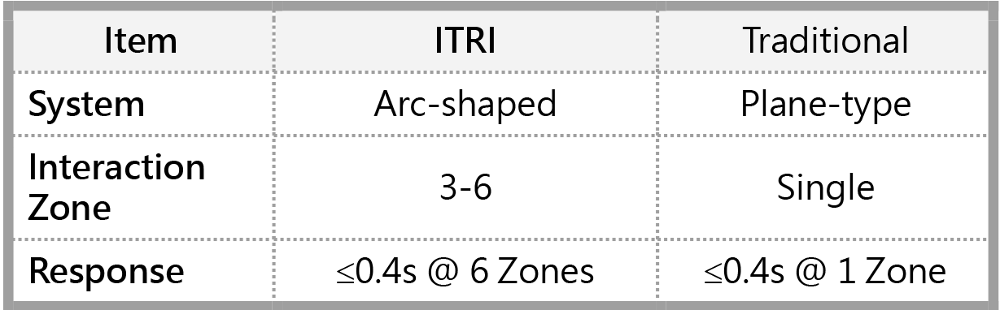

| 大尺寸弧形透明虛實融合技術 Large-scale Curved Transparent Virtual-real Fusion Technology |
| 因應沉浸式擴增實境互動體驗需求趨勢，工研院以平面虛實融 合互動技術為基礎，開發大尺寸弧形透明虛實融合互動技術， 提供使用者於弧形應用場域 3 至 6 區的虛實融合互動體驗，作 動反應時間≤0.4 秒，未來可應用於博物館等智慧育樂場域。 To meet the requirements of immersive augmented reality (AR) interaction, ITRI has developed a large-scale curved transparent virtual-real fusion interactive technology based on flat-type virtual-real fusion technology. It can support virtual-real fusion interaction in 3 to 6 zones in the arc application field, and the response time is less than 0.4 seconds. It can provide a somatosensory AR interaction experience by detecting the user's position and applying it to intelligent edutainment fields such as museums in future.  |
| 技術洽詢聯絡人：柯瑩 聯絡電話：03-5914765 E-mail：claireko@itri.org.tw |